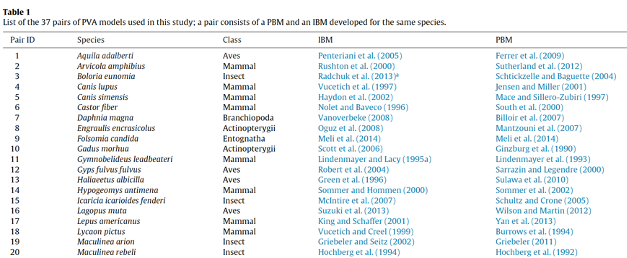

Introduction to Multivariate Analysis
Radchuk Viktoriia
2023-03-09
Orga / Admin
We meet between 10:00 and 15:00 in two sessions:
- 10:00 - 11:50, - morning session
- 13:10 - 15:00, - afternoon session.
The first two days (12th and 13th of April) are in person at the IZW
lecture hall. The third day will take place remotely, via the zoom link
shared with you per email.
Contents of the course
Day 1:
- General intro to multivariate analyses
- Principal Component Analysis (PCA), data requirements,
interpretation
- Redundancy Analysis (RDA)
- Variation partitioning
Contents of the course
Day 2:
- Types of data
- Distance-based vs transformation-based approaches
- Correspondence Analysis (CA) and Canonical Correspondence Analysis
(CCA)
- Principal Coordinate Analysis (PCoA)
- Distance-based Redundancy Analysis (db-RDA)
Contents of the course
Day 3:
- Non-metric Multidimensional Scaling (NMDS)
- Summary of approaches and data requirements
- Work on own data
How multivariate stats differs from the stats you are used to?
Linear model
\(y = \alpha + \beta\times x +
\epsilon\);
\(\epsilon \sim N(0, \sigma^2)\)
where \(\alpha\) is an intercept and
\(\beta\) is a slope.

Multiple linear regression
\(y = \alpha + \beta_1\times x_1 +
\beta_2\times x_2 + ... + \beta_n\times x_n + \epsilon_i\);
\(\epsilon_i \sim N(0,
\sigma^2)\)
where \(\beta_n\) are slopes for
\(n\) predictor variables (denoted as
\(x_n\)).
An ecological example

@ Yehor Yatsiuk
We are studying population abundance of Plecotus auritus
species in 30 different sites, located across the gradient of the
availability in roosting sites and food resources (insects). And we are
interested to know how these two predictors affect population abundance
of this species.
Our response variable: abundance of P.
auritus.
Our predictors: roost availability and insect
availability.
Beyond a single response variable
- What if we wanted to look at how environmental variables affect not
only the abundance of a single bat species but of several of them,
inhabiting same study sites?
- Say \(p\) is the total number of
species across our studied 30 sites. And \(p\) = 14.
- So we now have \(p\)
response variables, each reflecting the abundance of each study
species.
Difference between multiple regression and multivariate stats
Multiple linear regression:
we have 30 sites, in each we study abundance of P. auritus
using 2 predictors (roost and food availability, \(x\) and \(v\), respectively).
\[
\mathbf{Y} =
\begin{bmatrix}
y_1 \\
y_2 \\
y_3 \\
\dots \\
y_{30} \\
\end{bmatrix};
\mathbf{X} =
\begin{bmatrix}
x_1 & v_1 \\
x_2 & v_2 \\
x_3 & v_3 \\
\vdots & \vdots \\
x_{30} & v_{30} \\
\end{bmatrix}
\]
Sites are here shown in rows.
Difference between multiple regression and multivariate stats
Multivariate stats:
we have 30 sites, in each we study abundance of \(p\) species (14) using 2 predictors (roost
and food availability, \(x\) and \(v\), respectively).
\[
\mathbf{Y} =
\begin{bmatrix}
y_{1_1} & y_{1_2} & y_{1_3} & \dots y_{1_{14}} \\
y_{2_1} & y_{2_2} & y_{2_3} & \dots y_{2_{14}} \\
y_{3_1} & y_{3_2} & y_{3_3} & \dots y_{3_{14}} \\
\vdots & \vdots & \vdots & \ddots \\
y_{30_1} & y_{30_2} & y_{30_3} & \dots y_{30_{14}}\\
\end{bmatrix};
\mathbf{X} =
\begin{bmatrix}
x_1 & v_1 \\
x_2 & v_2 \\
x_3 & v_3 \\
\vdots & \vdots \\
x_{30} & v_{30} \\
\end{bmatrix}
\]
Multivariate analysis methods
- Principal Component Analysis (PCA)
- Correspondence Analysis (CA)
- Canonical Correspondence Analysis (CCA)
- Redundancy Analysis (RDA)
- Principal Coordinate Analysis (PCoA)
- Moran’s Eigenvector Maps
- Factor Analysis
- Discriminant analysis
- NMDS
- Principal Response Curves
- k-means clustering
- ….
(non-exhaustive list)
Example I: effects of environment on individual bat condition
Sample: bat individual
Response variables: temperature, hormone level,
parasite load
Predictor variables: habitat structure, food
availability, weather descriptors
So now each object /sample is an individual, and we have measurements
per this individual
Example I: effects of environment on individual bat condition
Say we sampled for 40 bat individuals their temperature (b), cortisol
(c), body mass (m), and parasite load (l). We want to understand how
morpho-physiological state of those individuals is affected by 4
predictors (habitat structure - h, food availability - f, precipitation
-p, and temperature -t).
\[
\mathbf{Y} =
\begin{bmatrix}
b_1 & c_1 & m_1 & l_1 \\
b_2 & c_2 & m_2 & l_2 \\
b_3 & c_3 & m_3 & l_3 \\
\vdots & \vdots & \vdots & \ddots \\
b_{40} & c_{40} & m_{40} & l_{40}\\
\end{bmatrix};
\mathbf{X} =
\begin{bmatrix}
h_1 & f_1 & p_1 & t_1 \\
h_2 & f_2 & p_2 & t_2 \\
h_3 & f_3 & p_3 & t_3 \\
\vdots & \vdots & \vdots & \vdots \\
h_{40} & f_{40} & p_{40} & t_{40} \\
\end{bmatrix}
\]
Example II: Effect of data availability on the model choice for
Population Viability Analysis (PVA)
Sample: publication reporting a PVA model
Response variables: studied species, social/territorial
organisation of the species, availability of the fine-scale dispersal
data, etc.
Possible predictor variables: Is the used model an
individual-based model or a more aggregated model like population matrix
model?
Effect of data availability on the complexity of PVA model
Radchuk et al. (2016) analysed models developed to assess population
viability of 37 species. For each species we found a pair of models: an
individual-based and a matrix-model.
The aim: to understand how data availability and
complexity of the species life history and ecology affect the choice of
the model complexity.

Impact of data availability on the complexity of PVA model
Discriminant Analysis classifying each model using the obtained
discriminant function. “I” corresponds to individual-based model (in
black) and “P” to population-based (e.g. matrix model, in red).
Discriminant function assigns models to the left of “0” on abscissa to
Is, and those to the right – to Ps. Certain models are misclassified by
the function.
Bat diversity in Eastern Ukraine
Vlaschenko et al. 2022 investigated the impact of land-use types and
forest age structure on bat assemblages in Eastern Ukrainian
Forests.
How land use types shape bat communities in Eastern Ukrainian
forests

@Vlaschenko et
al. 2022
PPY - Pipistrellus pygmaeus
PNA - Pipistrellus nathusii
MDA - Myotis daubentonii
MBR - Myotis brandtii
NNO – Nyctalus noctula
PKU – Pipistrellus kuhlii
PAU – Plecotus auritus
VMU – Vespertilio murinus
Main sources used throughout this course